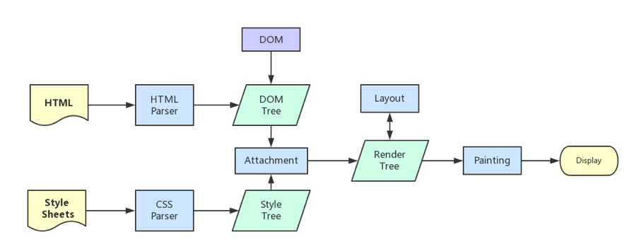

人法地，地法天，天法道，道法自然。
浏览器渲染原理 （一）在网址中输入一个网站后面都做了什么
浏览器渲染原理 （二）css、javascript、dom 阻塞关系
浏览器渲染原理 （三） repaint(重绘)和 reflow(回流)详解
如果想看更深入的原理，可以看：
浏览器是怎么渲染 html 的
关键渲染路径（Critical Rendering Path）是指与当前用户操作有关的内容。例如用户刚刚打开一个页面，首屏的显示就是当前用户操作相关的内容，具体就是浏览器收到HTML、CSS 和 JavaScript 等资源并对其进行处理从而渲染出 Web 页面。
如下图所示渲染流程：

当我们在浏览器中输入一个网址的时候，他是怎么请求资源，并且把我们的页面绘制出来的，大概可以分为六步，其中又可以细分，下面我大概说一个 6 大步骤：
- 浏览器首先通过
HTTP协议或者HTTPS协议，向服务器请求页面，当然这个其中也可能有缓存什么的；- 把请求回来的
HTML代码经过解析，构建成DOM树；- 计算
DOM 树上的CSS属性，生成CSSOM 树(CSS Object Model)；- 将
DOM 树和CSSOM 树合并成一个渲染树(rendering tree)；- 渲染树的每个元素包含的内容都是
计算过的，它被称之为布局 layout。浏览器使用一种流式处理的方法，只需要一次pass 绘制操作就可以布局所有的元素；- 将渲染树的各个节点绘制到屏幕上，这一步被称为
绘制 painting；- 按照合理的顺序合并图层然后显示到屏幕上
Composite（渲染层合并）
第一步请求资源
在我们在浏览器中输入完网址的时候，浏览器其实会先做以下几小步：
DNS 查询（就是把当前域名解析成为 ip 地址）TCP 连接HTTP 请求响应- 服务器返回数据
第二步构建 DOM 树
在构建 DOM 树的时候又可以分为几小步：
- 字符流通过状态机解析成为
词 token- 词
token => prase => DOM 树
构建 DOM 的过程是：从父到子，从先到后，一个一个节点构造，DOM 树结构和 HTML 标签一一对应。
第三步 CSSOM 模型构建
在计算 css 规则的时候，我们会在已经构建好的元素上，去检查它匹配到了哪些规则，再根据规则的优先级，做覆盖和调整。并且 CSSOM 主要是DOM 结构上的盒的描述，他基本上是依附于 DOM 树的。CSS 计算是把 CSS 规则应用到 DOM 树上，为 DOM 结构添加显示相关属性过程。CSSOM 是有 rule 部分和 view 部分的，rule 部分是在 dom 开始之前就构件完成的，而 view 部分是跟着 dom 同步构建的。
第四步构建渲染树（Rendr tree construction）
通过 DOM 树和 CSS 规则树，浏览器就可以通过它两构建渲染树了。渲染树和 DOM 元素相对应的，但并非一一对应。非可视化的 DOM 元素不会插入呈现树中，例如“head”元素。如果元素的 display 属性值为“none”，那么也不会显示在呈现树中（但是 visibility 属性值为“hidden”的元素仍会显示）。
第五步渲染树布局(layout of the render tree)
呈现器在创建完成并添加到呈现树时，并不包含位置和大小信息。计算这些值的过程称为布局或重排。
布局阶段会从渲染树更新节点开始遍历，由于渲染树的每个节点都是一个 Render Object 对象，包含宽高，位置，背景色等样式信息。浏览器中渲染这个过程，就是把每一个元素对应的盒变成位图，再把位图合成一个大的位图。
布局又分为全局布局和增量布局，详情请看
第六步渲染树绘制（Painting the render tree）
在绘制阶段，系统会遍历呈现树，并调用呈现器的“paint”方法，将呈现器的内容显示在屏幕上。绘制工作是使用用户界面基础组件完成的。
绘制又分为全局绘制和增量绘制，并且绘制的属性也会有前后之分，详情请看
compositor layer 合成渲染层
渲染过程把元素变成位图，合成把一部分位图变成合成层，最终的绘制过程把合成层显示到屏幕上。
对于 transform/opacity 这两种变换，浏览器不会用 repaint/reflow 处理，而是在已经渲染的元素基础上进行附加工作。
他的渲染流程为下图所示：
js 改变样式，样式只触发合成属性，不触发 repaint/reflow.附原文链接
stick-to-compositor-only-properties-and-manage-layer-count
阻塞渲染：CSS、JavaScript、DOM
谈论资源的阻塞时，我们要清楚，现代浏览器总是并行加载资源。例如，当 HTML 解析器（HTML Parser）被脚本阻塞时，解析器虽然会停止构建 DOM，但仍会识别该脚本后面的资源，并进行预加载。
同时，由于下面两点：
- 默认情况下，
CSS 被视为阻塞渲染的资源，这意味着浏览器将不会渲染任何已处理的内容，直至CSSOM 构建完毕。JavaScript 不仅可以读取和修改 DOM 属性，还可以读取和修改 CSSOM属性，因此CSS 解析与script 的执行互斥。- 存在
阻塞的 CSS 资源时，浏览器会延迟 JavaScript 的执行和 DOM 构建。
正是由于以上这些原因，script 标签的位置很重要我们在实际开发中应该尽量坚持以下两个原则：
在引入顺序上，CSS 资源先于 JavaScript 资源。
JavaScript 应尽量少的去影响 DOM 的构建。
想理清楚 CSS、JavaScript、DOM 之间的相互阻塞关系
改变阻塞模式
我们熟知的javascript标签上defer和async属性，还有可能不太熟知的link标签上的preload属性。
在介绍 async 和 defer 之前我们要先看了解两个概念，load和DOMContentLoaded的执行时机
load 和 DOMContentLoaded
load
Load 事件触发代表页面中的 DOM，CSS，JS，图片已经全部加载完毕。
DOMContentLoaded
DOMContentLoaded 事件触发代表初始的 HTML 被完全加载和解析，不需要等待 CSS，JS，图片加载。
首先是 async 和 defer
async 和 defer 他们对于内联脚本无作用（即没有 src 属性的脚本）
async
该布尔属性指示浏览器是否在允许的情况下异步执行该脚本。async 与 defer 的区别在于，如果已经加载好，就会开始执行——无论此刻是 HTML 解析阶段还是 DOMContentLoaded 触发之后。需要注意的是，这种方式加载的 JavaScript 依然会阻塞 load 事件。换句话说，async-script 可能在 DOMContentLoaded 触发之前或之后执行，但一定在 load 触发之前执行。并且多个 async-script 的执行顺序是不确定的。
defer
defer 属性表示延迟执行引入的 JavaScript，即这段 JavaScript 加载时 HTML 并未停止解析，这两个过程是并行的。整个 document 解析完毕且 defer-script 也加载完成之后（这两件事情的顺序无关），会执行所有由 defer-script 加载的 JavaScript 代码，然后触发 DOMContentLoaded 事件。
defer 与相比普通 script，有两点区别：载入 JavaScript 文件时不阻塞 HTML 的解析，执行阶段被放到 HTML 标签解析完成之后。
preload 和 prerender
preload
<link> 元素的 rel 属性的属性值preload能够让你在你的HTML页面中 <head>元素内部书写一些声明式的资源获取请求，可以指明哪些资源是在页面加载完成后即刻需要的。对于这种即刻需要的资源，你可能希望在页面加载的生命周期的早期阶段就开始获取，在浏览器的主渲染机制介入前就进行预加载。这一机制使得资源可以更早的得到加载并可用，且更不易阻塞页面的初步渲染，进而提升性能。
预加载可以一定程度上降低首屏的加载时间，因为可以将一些不影响首屏但重要的文件延后加载，唯一缺点就是兼容性不好.
prerender
可以通过预渲染将下载的文件预先在后台渲染，可以使用以下代码开启预渲染
预渲染虽然可以提高页面的加载速度，但是要确保该页面百分百会被用户在之后打开，否则就白白浪费资源去渲染
总结
这个里面基本上了解了浏览器的渲染过程，但是有很多细节没有套路比如说我们都知道浏览器是单线程的，ui 线程和 javascript 线程是怎么协调的，还有一个比较重要的是重绘和回流（重排）。